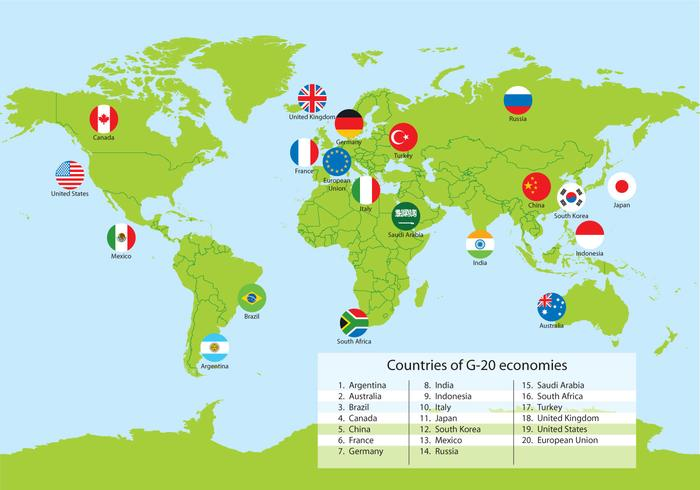

How do the G20 Countries Spend their Money?
The Group of 20 (G20) is an annual meeting of the countries of the world that have the largest economies. The Group is currently made up of the following countries: Argentina, Australia, Brazil, Canada, China, France, Germany, India, Indonesia, Italy, Japan, Mexico, Russia, Saudi Arabia, South Korea, South Africa, Turkey, the United Kingdom, the United States, and the European Union. The countries meet to determine the best strategy for solving complex, global, economic problems. Each of these countries have very different economies and choose to spend resources very differently. The analysis displayed on this website provides comparisons of each countries' Gross Domestic Product (GDP), along with their spending on healthcare, education, and military.
Data Sources
- Government Expenditure on Education
- Government Expenditure on Healthcare
- Government Expenditure on Military
- GDP by Country
- Population by Country
